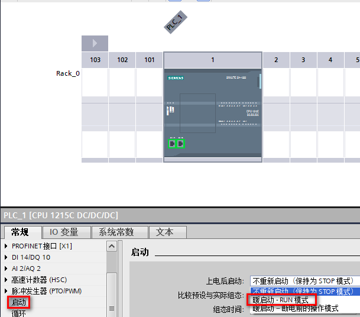
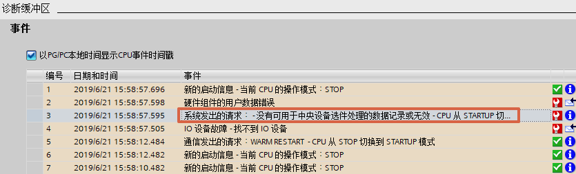
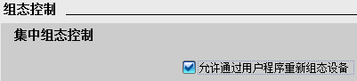
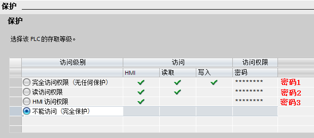
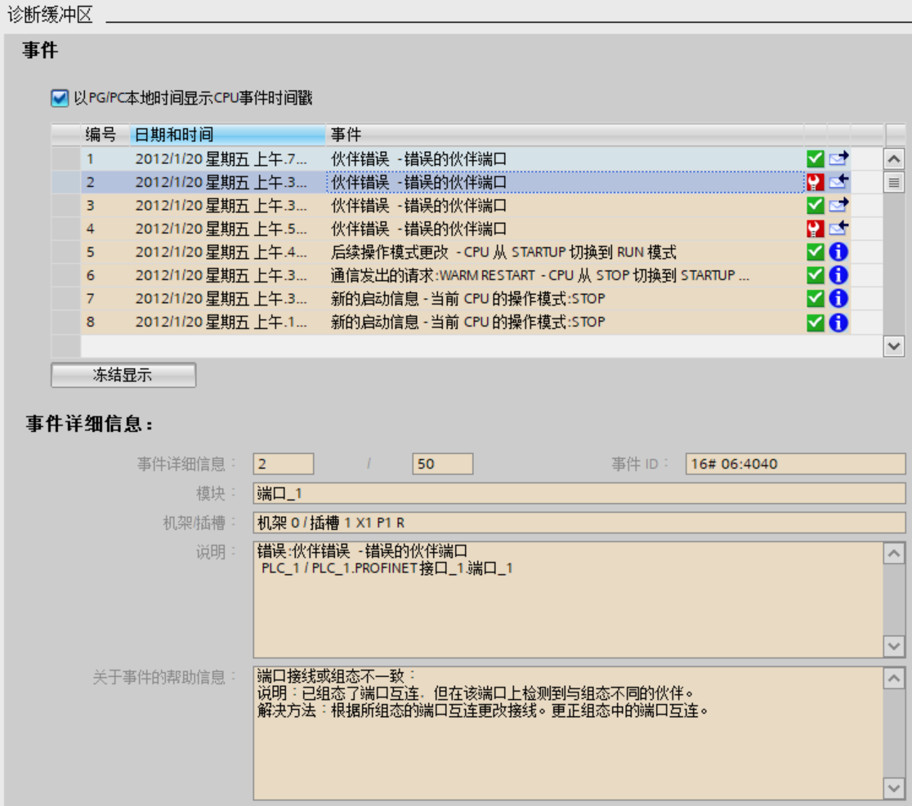

基本组态常见问题¶
在时钟同步功能中如何实现使用S7-1200 PLC作为时钟同步的 SNTP sever (服务器)端?
答：S7-1200 只可作为NTP的client(客户)端进行时钟同步,如要实现SNTP sever(服务器)端功能，可以通过下面的链接下载相应的库。
https://support.industry.siemens.com/cs/cn/zh/view/82203451
为什么在组态了系统存储器后， 常1 信号在程序中却不生效?
答：组态或修改了系统存储器后，要确保将配置重新下载到CPU，否则组态不生效。
CPU 属性的 启动 特性中, 设置的 比较预设与实际组态匹配 ，这里的 匹配 或者 兼容 是什么含义?
答：匹配（兼容性）是指与当前的模块的输入和输出数量相匹配，而且电气和功能特性也相匹配。兼容模块必须能够完全替换已组态的模块；功能性可以更多，但不能比替换的模块少。
举例说明，
16个通道的数字量输入模块可作为8个通道的数字量输入模块的兼容替换模块。反之则不兼容；16个通道的晶体管数字量输出模块不可作为16个通道的继电器数字量输出模块的兼容替换模块。
所以，如果设置仅在兼容时，才启动CPU并且插入组态的模块兼容时，CPU启动；如果插入的模块不兼容，则 CPU 无法启动。
如果选择即使不兼容也启动 CPU的设置，此时如果插槽中插入一个模拟量输出模块或不插入任何模块，则与实际的16个通道数字量输入的信号模块完全不兼容。虽然无法访问所组态的输入，但 CPU仍可启动。
为什么 CPU 上电后无法启动?
答：若 CPU 上电后无法启动进入到 RUN 模式，可按如下步骤确认：
1.在如图 1 所示的 CPU硬件组态中确认 启动项中上电后启动是否为 暖启动-RUN模式，若不是此时应修改组态为 暖启动-RUN模式，并重新编译、下载硬件组态。
若设置为 暖启动-断电前的操作模式，此时如果是断电前 CPU因故障停止，那么再上电后即使没有故障，CPU也会延续断电前的状态，保持STOP 模式。
若设置成 不重新启动，则 CPU 上电后直接进入 STOP 模式。

图 1 组态启动模式
2.如果此时 CPU 仍然无法启动，需要在线查看 CPU 的诊断缓冲区，查看导致 CPU 无法启动的具体原因，如图 2 所示。
例如，诊断中报错 没有可用于中央设备选件处理的数据记录或无效。

图 2 诊断缓冲区
这是因为在 CPU属性的 组态控制 中已激活 允许通过用户程序重新组态设备 ，如图 3所示，但启动 OB 未传送一个有效的组态数据记录，则 CPU 从启动模式返回到STOP 模式。

图 3 组态控制
3.CPU 还有可能因如下故障进入 STOP 状态
中央机架上的硬件模块出现故障
中央机架的模块进行热插拔
CPU 供电不稳定或供电线路上受到干扰
CPU 插入存储卡
同一程序循环中出现两次 超出最大周期时间 情况且没有复位循环定时器
为什么 CPU 读取的本地时间与当前实际时间相差 7 小时或者 8 小时?
答：因为当前的实际时间是中国的北京时间，而CPU属性中 时间 的默认时区为东一区:UTC+01:00，并且有些版本默认激活夏令时，在CPU属性中，必须先将本地时间的 时区 设置为中国所在的东八区：UTC+08：00，然后取消夏令时设置，并将配置下载到CPU后，才能读取到正确的本地时间。
为什么在 CPU 的属性中，保护/防护与安全 页面的 连接机制 中，无法激活 允许从远程伙伴（PLC，HMI，OPC.…)使用 PUT/GET 访问 ，显示为灰色?
答：造成这个现象的原因是因为已经将CPU的保护等级设置为最高 不能访问（完全保护）（如图4 所示）必须设置成其他保护等级，才能激活该选项。

图 4 保护设置
能否使用高版本 TIA 博途打开低版本 TIA 博途创建的项目?
答：可以参考以下链接。
能否使用高版本 TIA 博途上载 CPU 中低版本 TIA 博途下载过的项目?
答：可以参考以下链接。
如何解决 CPU 诊断缓冲区报错 伙伴错误------错误的伙伴端口 ?
答：如下图 5 所示，CPU诊断缓冲区报错 伙伴错误------错误的伙伴端口 ，如图 6 所示，因为 CPU组态了拓扑视图，但实际物理拓扑与组态拓扑不一致。
类似的错误，如：伙伴错误------检测不到相邻方 ，也因组态的拓扑与实际不一致。
解决方法：修改为正确的拓扑，或者删除拓扑视图中的连线。

图 5 诊断缓冲区

图 6 拓扑视图